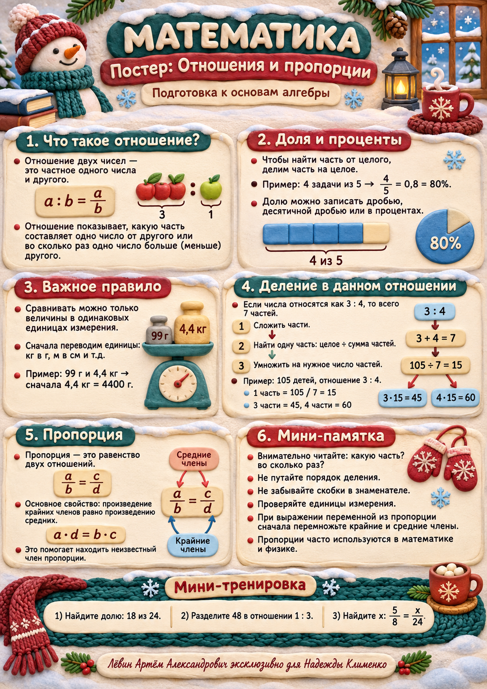

Отношения и пропорции
Два числа могут описывать долю, сравнение или распределение целого. Из одной идеи вырастают задачи на части, пропорции и выражение переменных в формулах.

Главная мысль занятия. Сначала определите, что именно с чем сравнивают. Затем согласуйте единицы измерения, выполните деление или примените основное свойство пропорции.
Отношение — язык сравнения
Отношение числа a к числу b — частное a и b. Порядок чисел имеет значение; b не должно равняться нулю.
Если нужно узнать, какую часть составляет величина от целого, делим часть на целое. Если спрашивают во сколько раз первая величина больше второй, делим первую на вторую.
4 задачи из 5
Решено четыре из пяти задач.
4 / 5 = 0,8 = 80%
Дробь, десятичная дробь и процент выражают одну и ту же долю.
Площадь катка
Из 480 м² расчистили 320 м².
320 / 480 = 2 / 3
Расчищено две трети всей площади.
480 / 320 = 3 / 2 = 1,5
Весь каток в полтора раза больше расчищенной части.
Величины: сначала единицы
Для отношения двух однородных физических величин используйте одни и те же единицы измерения. Тогда результат сравнения корректен.
Масса котёнка и кошки
Котёнок весит 99 г, кошка — 4,4 кг. Приводим массу кошки к граммам.
4,4 кг = 4400 г
99 / 4400 = 9 / 400 = 0,0225
Полученная доля меньше единицы: котёнок легче кошки, что согласуется с условием.
Как разделить целое в отношении 3 : 4
В лагере 105 детей. Девочки относятся к мальчикам как 3 : 4. Это означает семь одинаковых долей: три — девочкам, четыре — мальчикам.
Исследуйте решение по шагам
3 + 4 = 7
Всего семь равных долей.
Алгоритм для любого числа групп тот же: сложить все части, найти одну часть, умножить на количество частей каждой группы, проверить сумму.
Три группы
Число 12 разделили в отношении 1 : 2 : 4. Всего семь долей, поэтому три части равны:
12/7; 24/7; 48/7.
Дробный результат при делении в отношении вполне допустим.
Пропорция: равенство двух отношений
Пропорция — равенство двух отношений. Если a/b = c/d, где b и d отличны от нуля, то произведение крайних членов равно произведению средних:
Крайние члены — a и d; средние — b и c.
Проверьте равенство крест-накрест
12 = 12. Пропорция верна.
Неизвестный член пропорции
Перемножьте крайние и средние члены, сохраняя скобки вокруг составного выражения. Затем решите получившееся уравнение и проверьте ответ.
Неизвестный множитель
t / 4,2 = 2,5 / 3,5
- 3,5t = 4,2 · 2,5
- 3,5t = 10,5
- t = 3
Переменная внутри произведения
13,7 / 4 = 9t / 3,6
- 13,7 · 3,6 = 4 · 9t
- 49,32 = 36t
- t = 1,37
Скобки сохраняют смысл
1,5 / 6,3 = (a + 0,03) / 0,21
- 1,5 · 0,21 = 6,3 · (a + 0,03)
- 0,315 = 6,3 · (a + 0,03)
- a + 0,03 = 0,05
- a = 0,02
Выражение букв и формулы физики
Выразить букву — значит оставить её одну слева, а справа записать выражение через остальные величины. Из равенства ad = bc получаются:
| Буква | Выражение |
|---|---|
| a | a = bc / d |
| b | b = ad / c, при c ≠ 0 |
| c | c = ad / b |
| d | d = bc / a, при a ≠ 0 |
Исходные знаменатели b и d должны быть ненулевыми. После преобразования учитывайте также каждый новый знаменатель.
Пример из физики
Из формулы F = k · m₁ · m₂ / r² выразите m₁.
- Умножьте обе части на r²: Fr² = k · m₁ · m₂.
- Соберите множители при m₁.
- Разделите на k · m₂: m₁ = Fr² / (k · m₂).
Условия: r ≠ 0 и k · m₂ ≠ 0.
Самостоятельная тренировка
Путь А — 10 заданий от базового уровня до работы с формулой. Решайте самостоятельно, затем раскрывайте ответ. Открыто ответов: 0 из 10.
- Из десяти задач решено семь. Какую часть составляют решённые задачи? Запишите ответ дробью и в процентах.
Показать ответ
7/10 = 70%.
- Из 450 м² площадки расчистили 270 м². а) Какую часть расчистили? б) Во сколько раз вся площадка больше расчищенной части?
Показать ответ
а) 3/5; б) 5/3.
- Найдите отношение 72 см к 1,2 м. Сократите дробь.
Показать ответ
3/5 (поскольку 1,2 м = 120 см).
- Разделите 96 конфет в отношении 5 : 3. Сколько конфет в каждой группе?
Показать ответ
60 и 36 конфет.
- Разделите число 72 на три части в отношении 1 : 2 : 3.
Показать ответ
12, 24, 36.
- Проверьте равенство 5/8 = 15/24 основным свойством пропорции.
Показать ответ
Верна: 5 · 24 = 8 · 15 = 120.
- Решите пропорцию t/9 = 8/12.
Показать ответ
t = 6.
- Решите пропорцию 7,2/4 = 3x/5.
Показать ответ
x = 3.
- Решите пропорцию 1,8/4,5 = (a + 0,06)/0,3.
Показать ответ
a = 0,06.
- Из формулы F = km₁m₂/r² выразите m₂ и укажите ограничения.
Показать ответ
m₂ = Fr² / (km₁); r ≠ 0, km₁ ≠ 0.
Зимняя памятка
Уютный пластилиновый постер
Все ключевые правила урока в одной иллюстрации: доля, перевод единиц, деление на части и пропорция. Используйте после самостоятельной тренировки, чтобы восстановить порядок действий.
